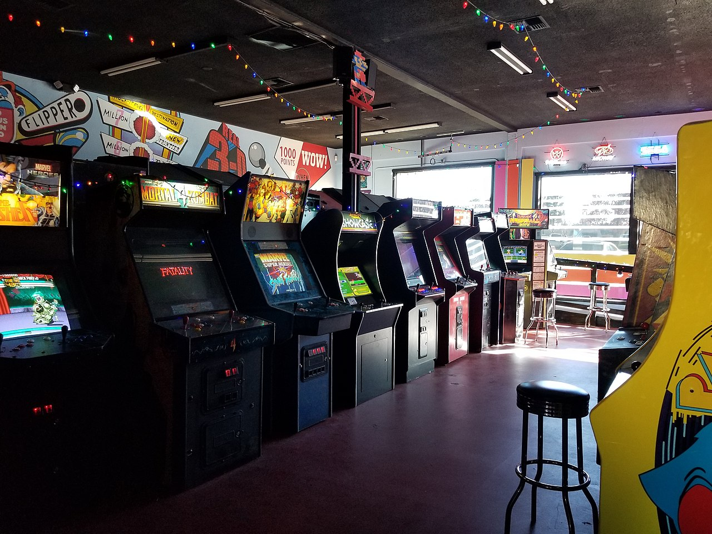

Welcome to my website! Made by Zachary Remus for LIS351, Spring 2022.
This website is made to preserve information regarding several classic arcade games. Please see the pages below!
This website is made to preserve information regarding several classic arcade games. Please see the pages below!